How it works, visually
The three kinds of dependency#
Every line in the graph is one of three kinds. The kind decides how worried you should be.

How a finding is classified#
When you ask "what breaks if I change column C?", each downstream item lands in exactly one bucket:


Confirmed findings always carry a proof path: the exact edges, with file:line:column, that connect your change to the affected column. You can click through them in the HTML report.
Unknown stays unknown#

If two joined tables both have an id, a tool that picks one would sometimes be wrong. LineageSutra AI records the join, raises a warning, and draws no edge for the ambiguous column. Warnings are counted and shown first in every report.
What happens when a column is renamed#

compare scans the baseline and the new SQL, finds removed columns, then walks the baseline graph to list who consumed them. That list is the breaking-change report.
Layers and what is real today#

Green means implemented and tested. Amber means partly done or untested in real hosts. Grey means not started. The status page lists every item.
How accurate is it?#
54 hand-labelled SQL cases, scored on exact edge sets. This is a regression corpus the author wrote before running the parser. It proves the documented subset behaves as labelled. It does not prove accuracy on your SQL; run audit --root ./sql to see how much of yours it could read.
How fast is it?#
Measured by the audit on the machine that ran it, with synthetic data. Your numbers will differ.
How the report stays honest#
- Every report is sealed with a SHA-256 hash of its canonical JSON.
verifyrecomputes it and fails if any byte changed.- Output never depends on file order, so the same SQL always gives the same seal.
- The seal detects edits. It does not prove who made the report.